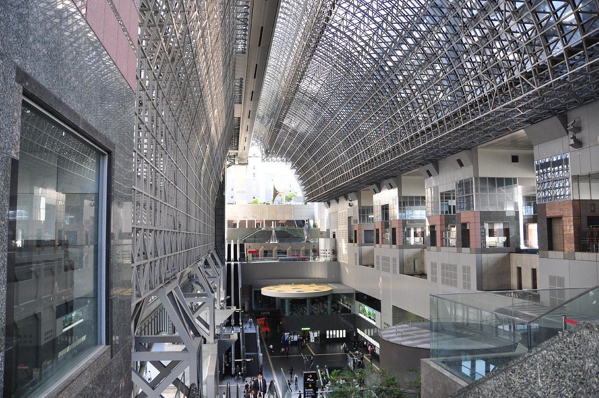

Course 오사카 ＆ 교토
오사카 ＆ 교토
엔터테인먼트 여행 3박4일 코스
Day 1
10:00 간사이 국제공항 입국
★공항 급행보다 빠르고 편리한 특급 라피트를 타면서도 숙소 위치에 따라 공합급행 보다 저렴한 요코소 오사카 킷푸 추천!
→ 난카이 전철 공항급행 42분 난바역
12:00 오사카 시내 도착, 숙소에 짐 맡기기
→ 지하철 텐진바시스지로쿠죠메역
13:00 오사카 주택박물관
★에도 시대 오사카 체험! 정교하게 복원된 거리를 걸으며 기념사진을 남겨보자.
런치 ＆ 디저트 타임

→ 지하철 16분 + 오사카 모노레일 15분 반파쿠키넨코엔역
15:30 엑스포 시티
★파격적인 실내 동물원 나후레루. 포켓몬 엑스포 짐. 건담 스퀘어 등을 즐겨보자
★쇼핑몰 라라포트 엑스포 시티에는 키즈 카페도 마련돼 있으며,
밤에는 일본 최대 높이의 대관람차 레드호스 오사카 휠을 타고 아름다운 풍경을 감상할 수 있다.
★여유가 있다면 육교 건너 반파쿠 기념공원에서 태양의 탑을 만나자.
디너 타임
→ 오사카 모노레일 4분 + 지하철 19분 난바역
20:00 도톤보리
★시끌벅적한 도톤보리의 야경을 만끽하며 오코노미야키, 타코야키, 쿠시카츠를 맛보자.
비어 타임

→ 숙소 이동
Day 2
→ JR 14분(오사카역 출발 기준) 유니버셜시티역
10:00 유니버셜 스튜디오 재팬
★할리우드 블록버스터처럼 짜릿한 어트랙션과 사계절 내내 떨어지는 버라이티한 이벤트!
일년 내내 붐비는 USJ. 빨리 입장하려면 오픈 시간 전에 도착하자.
런치 ＆ 디너 타임

→ JR 14분 오사카역 숙소 이동
Day 3
일정상 JR 티켓을 개별 발권하는게 효율적인 날. 교토 철도박물관에 흥미가 없고 비용이 부담된다면,
한큐 투어리스트 패스를 구매하여오사카 ↔ 아라시야마만 왕복하는 방법도 있다.
→ JR 33분(오사카역 출발 기준) 니시오지역 + 도보 20분
09:00 우메코지 공원(교토 철도박물관)
★53대 열차가 시대별로 전시된 일본 최대 규모 철도 종합 박물관.
커다란 경적과 함께 칙칙폭폭 증기기관차를 타보자.
→ 도보 20분
11:00 교토역
★맛집이 잔뜩 모인 교토역 빌딩에서 식사와 함께 잠깐의 휴식 타임!
런치 타임

→ JR 17분 시가아라시야마역
13:00 아라시야마
★토롯코 열차를 타고 협곡을 누비자. 돌아올 땐 강 뱃놀이를 선택하면 더욱 박진감 넘치는 하루다.


→ JR 55분(교토역 환승) 오사카역
17:00 오사카 스테이션 시티
디너 타임

→ 도보 10분
19:00 우메다 스카이 빌딩
★360도 파노라마로 즐기는 아찔한 초고층 전반대에서 반짝이는 야경을 눈에 담아보자


→ 숙소 이동
Day 4
오사카 주유 패스 난카이 공항판을 사용하면 지하철 + 공항급행 + 유람선 + 대관람차가 무료,
가이유칸 입장료가 100엔 할인된다. 단 가이유칸만 둘러본다면 지하철 + 공항급행 + 가이유칸으로 묶인
오사카 가이유 킷푸 난카이 확장판을 추천한다.
→ 지하철 20~25분(난바역 출발 기준) 오사카코역
오사카코역에 짐 맡기기
→ 도보 8분
10:00 가이유칸
★3만여 마리의 어류를 만날 수 있는 대형 아쿠아리움을 관람하자
→ 도보 2분
12:00 유람선 산타마리아
★45분간 베이 지역 일대를 순환하는 크루즈호. 클래식한 외관이 항해의 설렘을 더한다.
→ 도보 1분
13:00 텐포잔 대관람차
★대관람차를 타고 오사카의 마지막 전망을 즐기자
런치 타임